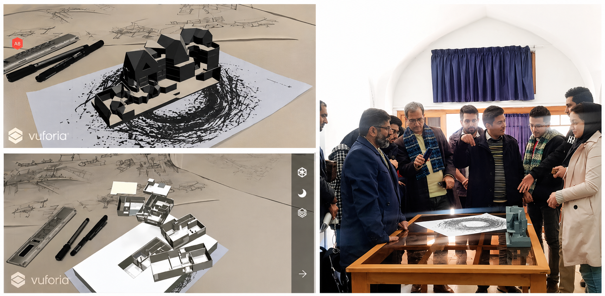
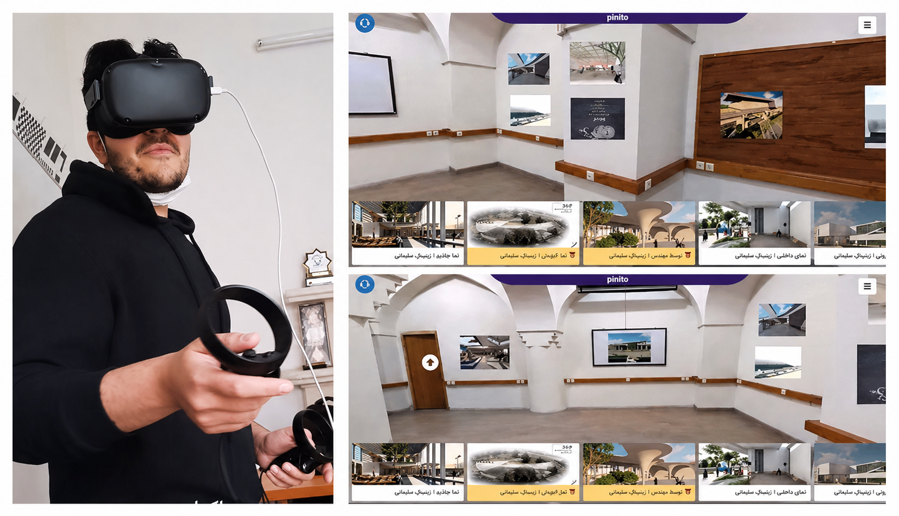
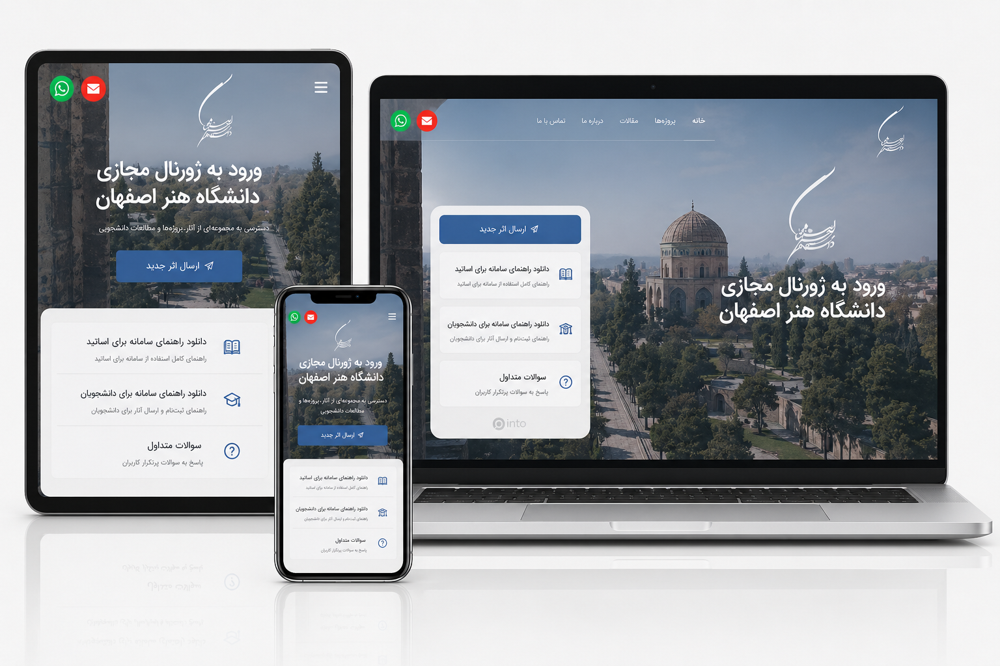
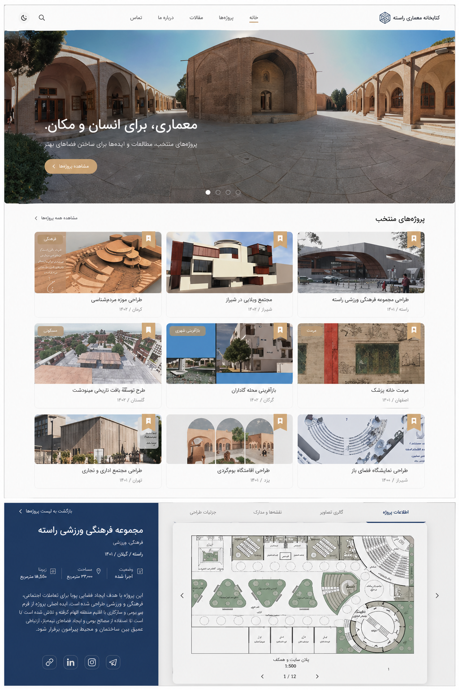

What started as a way to make architecture presentations cheaper and more immersive became, during COVID, the only way an entire university could hold its end-of-year exhibition. A web-based VR platform built for students, expanded to three departments and 750 users.
Every semester, architecture students at the Art University of Isfahan spent significant time and money building physical scale models for their final presentations — called "jojman." Beyond the cost, the process was stressful and left little room for iteration.
When COVID hit, that problem became critical. There was no physical space, no way to gather, and no platform to replace the experience — including the peer feedback and professor critique that made jojman valuable in the first place.

Before COVID, we built a mobile AR app using Unity and Vuforia that let students point their phone at a drawing and see their 3D model appear on top of it in real scale. Professors and students could walk around it, inspect it, and discuss it — no physical model needed.
This was the seed of what became PINITO.
Early AR prototype (2019) — 3D architectural models overlaid on hand drawings using Vuforia. Right: a live demo with faculty members.
PINITO is a web-based VR exhibition platform built around a 3D model of the Art University of Isfahan. Students upload their projects — drawings, renders, videos, 3D models — and visitors can walk through the virtual building and experience the work as if they were there in person.
It was designed with two separate spaces: a public-facing exhibition for anyone to browse, and a private communication portal for student-teacher critique and peer feedback — replicating the social dynamics of a real jojman.
A 3D recreation of the Art University of Isfahan — familiar to students, immersive for visitors.
Students upload drawings, renders, videos, and 3D models directly to their space in the exhibition.
A private channel for professors to leave critique and students to respond — replacing in-person review sessions.
Anyone could visit the exhibition, browse student work, and leave comments — keeping the social dimension of jojman alive.
For a fully immersive experience, visitors could explore the exhibition using an Oculus headset.
Designed to work on any device — desktop, mobile, or VR headset — so no student was left out.
Inside PINITO, visitors navigate the virtual halls of the university, stop at student project displays on the walls, click through to see full project details, and leave feedback. The spatial metaphor made it immediately intuitive — it felt like being there.

Left: a visitor exploring PINITO using an Oculus headset. Right: the virtual exhibition space with student projects displayed on the walls.

The project portal was built to work seamlessly across desktop and mobile. Students could manage their uploads, view feedback from professors, and track how many people had visited their work — all from the same interface.
The responsive design was a deliberate decision: not everyone had access to a laptop, and the platform needed to reach every student equally.
The PINITO project portal — responsive across desktop and mobile.

The public exhibition gallery — visitors browse student projects, click through to full project pages, and leave comments.
This was my first web VR project. I had previously worked on mobile apps and AR, but leading the design of a platform at this scale — under time pressure, with a team of 8 and university stakeholders — was new territory.
End-to-end design from Figma wireframes through to final UI — including both the VR exhibition and the web portal.
Conducted 60 interviews with students and professors across departments to understand different workflows and needs.
Coordinated with university officials to secure institutional support, IP access, and cross-department rollout.
Built a Unity + Vuforia mobile app to overlay 3D models on architectural drawings. Demonstrated live to faculty — strong positive response.
With physical exhibitions impossible, redesigned the concept as a browser-based VR platform. Learned A-Frame from scratch while simultaneously designing the interface in Figma.
University officials wanted the platform extended to other departments. Conducted 60 interviews with students and professors across faculties to understand new workflows — especially group projects and video-heavy submissions.
Redesigned the upload system and communication tools to support video, group work, and inter-student collaboration. Coordinated with the university IT department to deploy on institutional infrastructure.
PINITO gave students a way to share their work during the most disruptive period in the university's recent history. But beyond COVID, it demonstrated that digital exhibition spaces could offer something physical ones couldn't — accessibility, reach, and a permanent archive of student work.
Expanding to other departments revealed that different disciplines have very different presentation needs. Architecture students work with 3D models and drawings; other departments rely heavily on video and collaborative group submissions. Designing for that range required a much more flexible content system — and pushed the platform to become genuinely multipurpose, not just a niche tool for one department.